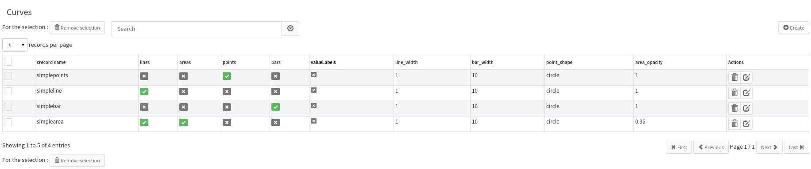
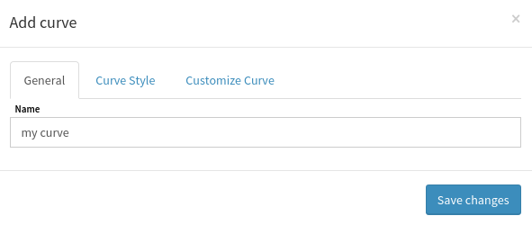
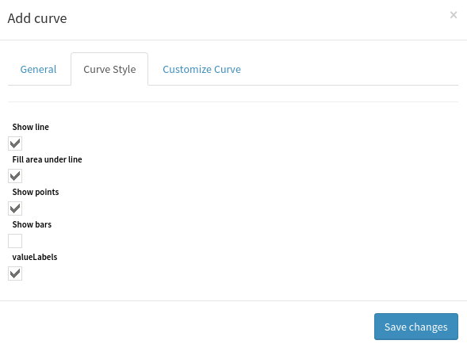

Series and Curves¶
This document explains how to use the Performance Data view.
Introduction¶
On this view, you can see 3 lists:
- Metrics: lists the known metrics ;
- Series: lists your series and allows you to create/edit/remove them ;
- Curves: lists your curves and allows you to create/edit/remove them.
A metric is a named value that can change over time. At the moment, Canopsis knows 4 types of metrics:
- GAUGE: the actual value of the metric is the last incoming value ;
- COUNTER: increment the previous metric’s value with this one ;
- ABSOLUTE: always positive value ;
- DERIVE: the current value corresponds to the metric’s value derived over time.
A serie is an object containing :
- a name,
- multiple metrics,
- a formula, involving the selected metrics,
- an aggregation, to fetch the metrics aligned on X axis,
- some metadata (warn, crit, min, max, unit).
Just like a metric, a serie will generate a list of points (where each point is
a pair (timestamp,value)).
Each point is the result of the formula applied to the fetched metrics.
A curve describe how to plot a serie or a metric:
- do we want lines, areas, points, and/or bars ?
- do we want to plot the values with the curve ?
- how does look lines, areas, points, and/or bars ?
How to make a serie¶
First, click on the Create button, a new form will appears:
Detailed form:
- Name: serie’s name, will be used to labelize the serie on a chart ;
- Data source: metrics that will be fetched to feed the serie.
Detailed form:
aggregation method: method used to aggregate metrics points ;
aggregation interval: time interval between two aggregated points.
- formula:
- mathematical formula that will be used to consolidate the fetched metrics in a single point ;
- click on a metric in the list to add it in the formula.
Detailed form:
- min: defines the minimum value this serie will take ;
- max: defines the maximum value this serie will take ;
- warn: warning threshold ;
- crit: critical threshold ;
- unit: serie’s unit.
How to make a curve¶
First, click on the Create button, a new form will appears:
Detailed form:

- name: curve’s name.
Detailed form:
- Show line: if checked, will plot a line chart ;
- Fill area under line: if checked, will plot an area on the chart ;
- Show points: if checked, will plot each point on the chart ;
- Show bars: if checked, will plot a bar chart ;
- Show values: if checked, will display values above each point.
Detailed form:
- Line width: line/bar width in pixel ;
- Bar width: bar width in X unit ;
- Lines style: if the line is continuous, dashed, ... ;
- Point’s shape: shape used to plot a point ;
- Area opacity: number from 0 to 1, 0 being transparent and 1 being opaque.